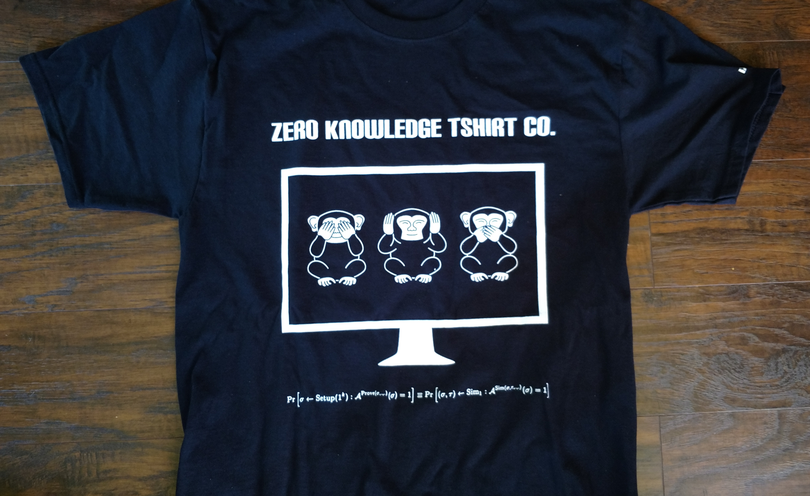
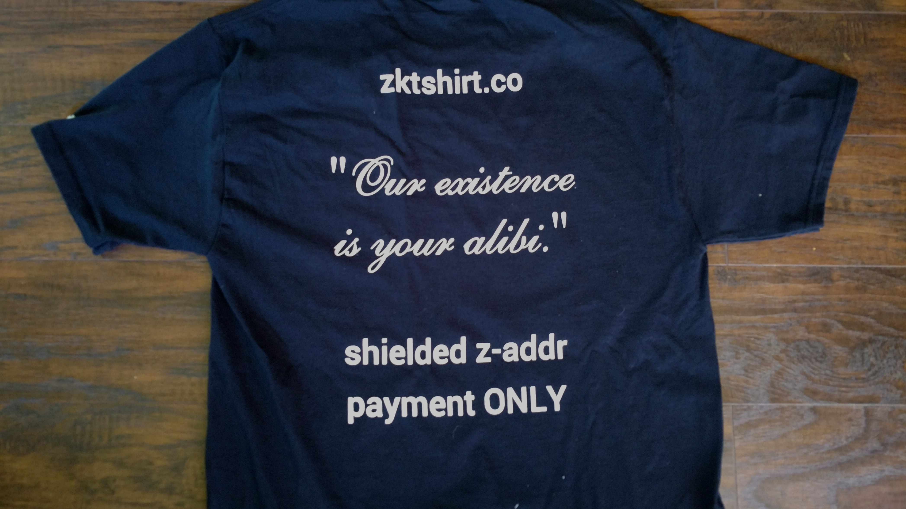

Platforms Supported: Linux
Payment Methods Accepted: Zcash
Enter info, generate and send zcash-cli command, and receive a tshirt:
Links for more info:
- What is a Zero Knowledge Proof?
https://en.wikipedia.org/wiki/Zero-knowledge_proof - What is Zcash?
https://z.cash/ - How can I obtain some Zcash?
https://shapeshift.io/legacy/ - How can I install Zcash?
https://z.cash/download.html - When will Ethereum have zksnark enabled private transactions?
https://github.com/ethereum/EIPs/pull/212
https://github.com/ethereum/EIPs/pull/213 - What is Tezos stand on zksnarks and private transactions?
"Our initial plan is to strike a compromise and integrate Zcash’s proof circuit in the protocol, but restrict its operations to a special token issued on the Tezos blockchain. "